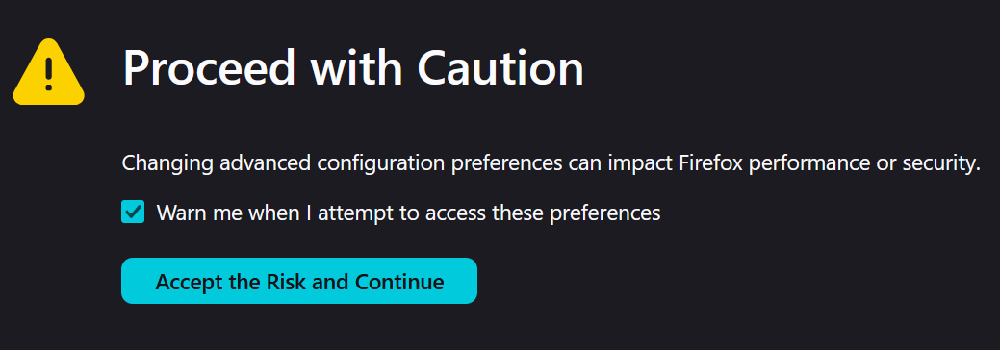

{'indexed': {'date-parts': [[2026, 3, 21]], 'date-time': '2026-03-21T11:41:58Z', 'timestamp': 1774093318343, 'version': '3.50.1'}, 'reference-count': 26, 'publisher': 'Elsevier BV', 'issue': '9103', 'license': [{'start': {'date-parts': [[1998, 2, 1]], 'date-time': '1998-02-01T00:00:00Z', 'timestamp': 886291200000}, 'content-version': 'tdm', 'delay-in-days': 0, 'URL': 'https://www.elsevier.com/tdm/userlicense/1.0/'}], 'content-domain': {'domain': [], 'crossmark-restriction': False}, 'short-container-title': ['The Lancet'], 'published-print': {'date-parts': [[1998, 2]]}, 'DOI': '10.1016/s0140-6736(97)11096-0', 'type': 'journal-article', 'created': {'date-parts': [[2002, 7, 25]], 'date-time': '2002-07-25T12:19:56Z', 'timestamp': 1027599596000}, 'page': '637-641', 'source': 'Crossref', 'is-referenced-by-count': 1972, 'title': ['RETRACTED: Ileal-lymphoid-nodular hyperplasia, non-specific colitis, and pervasive developmental disorder in children'], 'prefix': '10.1016', 'volume': '351', 'author': [{'given': 'AJ', 'family': 'Wakefield', 'sequence': 'first', 'affiliation': []}, {'given': 'SH', 'family': 'Murch', 'sequence': 'additional', 'affiliation': []}, {'given': 'A', 'family': 'Anthony', 'sequence': 'additional', 'affiliation': []}, {'given': 'J', 'family': 'Linnell', 'sequence': 'additional', 'affiliation': []}, {'given': 'DM', 'family': 'Casson', 'sequence': 'additional', 'affiliation': []}, {'given': 'M', 'family': 'Malik', 'sequence': 'additional', 'affiliation': []}, {'given': 'M', 'family': 'Berelowitz', 'sequence': 'additional', 'affiliation': []}, {'given': 'AP', 'family': 'Dhillon', 'sequence': 'additional', 'affiliation': []}, {'given': 'MA', 'family': 'Thomson', 'sequence': 'additional', 'affiliation': []}, {'given': 'P', 'family': 'Harvey', 'sequence': 'additional', 'affiliation': []}, {'given': 'A', 'family': 'Valentine', 'sequence': 'additional', 'affiliation': []}, {'given': 'SE', 'family': 'Davies', 'sequence': 'additional', 'affiliation': []}, {'given': 'JA', 'family': 'Walker-Smith', 'sequence': 'additional', 'affiliation': []}], 'member': '78', 'reference': [{'key': '10.1016/S0140-6736(97)11096-0_bib1', 'series-title': 'Diagnostic and Statistical Manual of Mental Disorders (DSM-IV)', 'year': '1994'}, {'key': '10.1016/S0140-6736(97)11096-0_bib2', 'doi-asserted-by': 'crossref', 'first-page': '311', 'DOI': '10.1016/0009-8981(82)90018-3', 'article-title': 'A sensitive micromethod for the routine estimations of methylmalonic acid in body fluids and tissues using thin-layer chromatography.', 'volume': '118', 'author': 'Bhatt', 'year': '1982', 'journal-title': 'Clin Chem Acta'}, {'key': '10.1016/S0140-6736(97)11096-0_bib3', 'doi-asserted-by': 'crossref', 'first-page': '724', 'DOI': '10.1136/gut.38.5.724', 'article-title': "Pathogenesis of aphthoid ulcers in Crohn's disease: correlative findings by magnifying colonoscopy, electromicroscopy, and immunohistochemistry.", 'volume': '38', 'author': 'Fujimura', 'year': '1996', 'journal-title': 'Gut'}, {'key': '10.1016/S0140-6736(97)11096-0_bib4', 'first-page': '146', 'article-title': 'Die Psychopathologie des coeliakakranken kindes.', 'volume': '197', 'author': 'Asperger', 'year': '1961', 'journal-title': 'Ann Paediatr'}, {'key': '10.1016/S0140-6736(97)11096-0_bib5', 'doi-asserted-by': 'crossref', 'first-page': '883', 'DOI': '10.1016/S0140-6736(72)92258-1', 'article-title': 'Alpha-1 antitrypsin, autism and coeliac disease.', 'volume': 'ii', 'author': 'Walker-Smith', 'year': '1972', 'journal-title': 'Lancet'}, {'key': '10.1016/S0140-6736(97)11096-0_bib6', 'doi-asserted-by': 'crossref', 'first-page': '1076', 'DOI': '10.1111/j.1651-2227.1996.tb14220.x', 'article-title': 'Abnormal intestinal permeability in children with autism.', 'volume': '85', 'author': "D'Eufemia", 'year': '1996', 'journal-title': 'Acta Paediatrica'}, {'key': '10.1016/S0140-6736(97)11096-0_bib7', 'doi-asserted-by': 'crossref', 'first-page': '174', 'DOI': '10.1016/0166-2236(79)90071-7', 'article-title': 'A neurochemical theory of autism.', 'volume': '2', 'author': 'Panksepp', 'year': '1979', 'journal-title': 'Trends Neurosci'}, {'key': '10.1016/S0140-6736(97)11096-0_bib8', 'first-page': '627', 'article-title': 'Biologically active peptide-containing fractions in schizophrenia and childhood autism.', 'volume': '28', 'author': 'Reichelt', 'year': '1993', 'journal-title': 'Adv Biochem Psychopharmacol'}, {'key': '10.1016/S0140-6736(97)11096-0_bib9', 'first-page': '328', 'article-title': 'Role of neuropeptides in autism and their relationships with classical neurotransmitters.', 'volume': '3', 'author': 'Shattock', 'year': '1991', 'journal-title': 'Brain Dysfunction'}, {'key': '10.1016/S0140-6736(97)11096-0_bib10', 'unstructured': 'Waring RH, Ngong JM. Sulphate metabolism in allergy induced autism: relevance to disease aetiology, conference proceedings, biological perspectives in autism, University of Durham, NAS 35–44.'}, {'key': '10.1016/S0140-6736(97)11096-0_bib11', 'doi-asserted-by': 'crossref', 'first-page': '711', 'DOI': '10.1016/0140-6736(93)90485-Y', 'article-title': 'Disruption of sulphated glycosaminoglycans in intestinal inflammation.', 'volume': '341', 'author': 'Murch', 'year': '1993', 'journal-title': 'Lancet'}, {'key': '10.1016/S0140-6736(97)11096-0_bib12', 'doi-asserted-by': 'crossref', 'first-page': '72', 'DOI': '10.1159/000119295', 'article-title': 'Elevated serotonin levels in autism: association with the major histocompatibility complex.', 'volume': '34', 'author': 'Warren', 'year': '1996', 'journal-title': 'Neuropsychobiology'}, {'key': '10.1016/S0140-6736(97)11096-0_bib13', 'first-page': '137', 'article-title': 'Food allergy and infantile autism.', 'volume': '37', 'author': 'Lucarelli', 'year': '1995', 'journal-title': 'Panminerva Med'}, {'key': '10.1016/S0140-6736(97)11096-0_bib14', 'unstructured': 'Rutter M, Taylor E, Hersor L. In: Child and adolescent psychiatry. 3rd edn. London: Blackwells Scientific Publications: 581–82.'}, {'key': '10.1016/S0140-6736(97)11096-0_bib15', 'series-title': 'The Autistic Spectrum.', 'first-page': '68', 'author': 'Wing', 'year': '1996'}, {'key': '10.1016/S0140-6736(97)11096-0_bib16', 'doi-asserted-by': 'crossref', 'first-page': '13', 'DOI': '10.1007/BF02628672', 'article-title': 'Dialysable lymphocyte extract (DLyE) in infantile onset autism: a pilot study.', 'volume': '9', 'author': 'Fudenberg', 'year': '1996', 'journal-title': 'Biotherapy'}, {'key': '10.1016/S0140-6736(97)11096-0_bib17', 'first-page': '455', 'article-title': 'Immunology and immunologic treatment of autism', 'author': 'Gupta', 'year': '1996', 'journal-title': 'Proc Natl Autism Assn Chicago'}, {'key': '10.1016/S0140-6736(97)11096-0_bib18', 'doi-asserted-by': 'crossref', 'first-page': '28', 'DOI': '10.1007/BF01211371', 'article-title': "Detection of immunoreactive antigen with monoclonal antibody tomeasles virus in tissue from patients with Crohn's disease.", 'volume': '30', 'author': 'Miyamoto', 'year': '1995', 'journal-title': 'J Gastroenterol'}, {'key': '10.1016/S0140-6736(97)11096-0_bib19', 'doi-asserted-by': 'crossref', 'first-page': '508', 'DOI': '10.1016/S0140-6736(94)91898-8', 'article-title': "Crohn's disease following early measles exposure.", 'volume': '344', 'author': 'Ekbom', 'year': '1994', 'journal-title': 'Lancet'}, {'key': '10.1016/S0140-6736(97)11096-0_bib20', 'doi-asserted-by': 'crossref', 'first-page': '1071', 'DOI': '10.1016/S0140-6736(95)90816-1', 'article-title': 'Is measles vaccination a risk factor for inflammatory bowel diseases?', 'volume': '345', 'author': 'Thompson', 'year': '1995', 'journal-title': 'Lancet'}, {'key': '10.1016/S0140-6736(97)11096-0_bib21', 'doi-asserted-by': 'crossref', 'first-page': '877', 'DOI': '10.1007/BF01718162', 'article-title': 'Polymerase chain reaction detection of the haemagglutinin gene from an attenuated measles vaccines strain in the peripheral mononuclear cells of children with autoimmune hepatitis.', 'volume': '141', 'author': 'Kawashima', 'year': '1996', 'journal-title': 'Arch Virol'}, {'key': '10.1016/S0140-6736(97)11096-0_bib22', 'doi-asserted-by': 'crossref', 'first-page': '327', 'DOI': '10.1136/bmj.312.7027.327', 'article-title': 'Autism spectrum disorders: no evidence for or against an increase in prevalence.', 'volume': '312', 'author': 'Wing', 'year': '1996', 'journal-title': 'BMJ'}, {'key': '10.1016/S0140-6736(97)11096-0_bib23', 'doi-asserted-by': 'crossref', 'first-page': '730', 'DOI': '10.1016/S0140-6736(05)60171-7', 'article-title': 'Measles vaccination and neurological events.', 'volume': '349', 'author': 'Miller', 'year': '1997', 'journal-title': 'Lancet'}, {'key': '10.1016/S0140-6736(97)11096-0_bib24', 'doi-asserted-by': 'crossref', 'first-page': '438', 'DOI': '10.1111/j.1365-2249.1991.tb05657.x', 'article-title': 'Increased frequency of the null allele at the complement C4B locus in autism.', 'volume': '83', 'author': 'Warren', 'year': '1991', 'journal-title': 'Clin Exp Immunol'}, {'key': '10.1016/S0140-6736(97)11096-0_bib25', 'doi-asserted-by': 'crossref', 'first-page': '1072', 'DOI': '10.1016/S0140-6736(80)92287-4', 'article-title': 'Problems with the serum vitamin B12 assay.', 'volume': 'ii', 'author': 'England', 'year': '1980', 'journal-title': 'Lancet'}, {'key': '10.1016/S0140-6736(97)11096-0_bib26', 'first-page': '43', 'article-title': 'Mental retardation, megaloblastic anaemic, homocysteine metabolism due to an error in B12 metabolism.', 'volume': '47', 'author': 'Dillon', 'year': '1974', 'journal-title': 'Clin Sci Mol Med'}], 'updated-by': [{'DOI': '10.1016/s0140-6736(04)15715-2', 'type': 'correction', 'label': 'Correction', 'source': 'retraction-watch', 'updated': {'date-parts': [[2004, 3, 6]], 'date-time': '2004-03-06T00:00:00Z', 'timestamp': 1078531200000}, 'record-id': '17269'}, {'DOI': '10.1016/s0140-6736(10)60175-4', 'type': 'retraction', 'label': 'Retraction', 'source': 'retraction-watch', 'updated': {'date-parts': [[2010, 2, 6]], 'date-time': '2010-02-06T00:00:00Z', 'timestamp': 1265414400000}, 'record-id': '4036'}], 'container-title': ['The Lancet'], 'original-title': [], 'language': 'en', 'link': [{'URL': 'https://api.elsevier.com/content/article/PII:S0140673697110960?httpAccept=text/xml', 'content-type': 'text/xml', 'content-version': 'vor', 'intended-application': 'text-mining'}, {'URL': 'https://api.elsevier.com/content/article/PII:S0140673697110960?httpAccept=text/plain', 'content-type': 'text/plain', 'content-version': 'vor', 'intended-application': 'text-mining'}], 'deposited': {'date-parts': [[2019, 5, 1]], 'date-time': '2019-05-01T12:43:25Z', 'timestamp': 1556714605000}, 'score': 1, 'resource': {'primary': {'URL': 'https://linkinghub.elsevier.com/retrieve/pii/S0140673697110960'}}, 'subtitle': [], 'short-title': [], 'issued': {'date-parts': [[1998, 2]]}, 'references-count': 26, 'journal-issue': {'issue': '9103', 'published-print': {'date-parts': [[1998, 2]]}}, 'alternative-id': ['S0140673697110960'], 'URL': 'https://doi.org/10.1016/s0140-6736(97)11096-0', 'relation': {}, 'ISSN': ['0140-6736'], 'issn-type': [{'value': '0140-6736', 'type': 'print'}], 'subject': [], 'published': {'date-parts': [[1998, 2]]}}Troubleshooting JSON viewing issues
The first question to answer is how are you viewing the JSON file? If you don’t have an IDE installed, then you will probably have two options; your operating system’s (aka OS, likely one of Microsoft’s Windows, Apple’s MAC OS, or a Linux distribution) default text editor, or your web browser. I recommend using your web browser to view JSON files while going through this tutorial
If you’re seeing a wall of techno-gibberish when you open the file…
When viewing JSON in your web browser, the file will be opening in a new browser tab. If the thing you saw in a new browser tab looks like this, then you need to enable JSON formatting in your browser. Here are some instructions for how you can do that
Fixing formatting
Mozilla Firefox
By default, this JSON formatting should be enabled. If you’re having issues, you can type about:config in the address bar, press enter, and then you will be met with the following screen:

You should click “Accept the Risk and Continue”, then in the search bar labelled “Search preference name” type in devtools.jsonview.enabled. If the value that comes up says false, you will will need to toggle it to true with the button on the far right of the screen.
Google Chrome
As I understand it JSON formatting is not a default feature included. There are however a number of free JSON viewing/formatting extensions in the chrome web store which you can download for free to fix this issue for you.
Safari
As I understand it JSON formatting is not a default feature included. There are however a number of free JSON viewing/formatting extensions in the App Store for Mac which you can download for free to fix this issue for you.
Microsoft Edge
Microsoft edge does have a native formatting option, which you can enable by checking the “Pretty-print” checkbox at the top left of the screen when viewing an API response. There are also a number of free extensions on the Edge Add-on store
Native OS Text Editors
Text Editors are programs that allow you to view and edit text files. At the most simple, they allow you to open files with the .txt file extension, but you can also open .json files with them.
Windows: Notepad
Mac: TextEdit
Linux: various different tools, nano/vim commonly default
I don’t recommend using these, as JSON formatting features will not be integrated. Formatting is one of the features for developing code that makes “integrated development environments” like the open-source VS Code useful. If you don’t have VS Code installed already then just use an updated version of a modern web browser (Mozilla Firefox, Google Chrome, Apple’s Safari, or Microsoft Edge)
IDEs
A good simple definiton of an IDE (from Amazon Web Services)
What is an IDE?
An integrated development environment (IDE) is a software application that helps programmers develop software code efficiently. It increases developer productivity by combining capabilities such as software editing, building, testing, and packaging in an easy-to-use application. Just as writers use text editors and accountants use spreadsheets, software developers use IDEs to make their job easier.
Some IDE examples that might be familiar to academics and data scientists are: RStudio, Spyder, MATLAB
The IDE which I recommend is VS Code, as it is open-source, has a huge community building useful extensions, and plenty of resources online of how to configure it to meet virtually any need you may have.